Lesson 1
Motherboard

A motherboard (also called mainboard, main circuit board, system board, baseboard, planar board, logic board, and mobo) is the main printed circuit board (PCB) in general-purpose computers and other expandable systems.
CD-IN
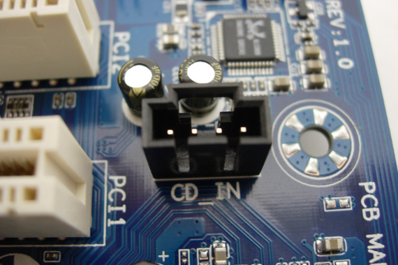Is a four-pin, black connector on Sound card or motherboard. It is Optical Drive Audio is another name for it. connector. It's employed to Attach the wire with four (4) pins from CD/DVD ROM to the four (4) CD-IN pin connection turned on Motherboard/MOBO. A compact disc is a portable storage medium that can record, store and play back audio, video and other data in digital form. Techtarget
PCI
The term "peripheral component" is used. Connect and utilize for attachment hardware elements on motherboard. Intel was the first to PCI was first introduced in 1992. It has 64-bit and 32-bit versions that the 133 MBps speed. The majority of Devices that are compatible with PCI slots were LAN (Ethernet) and sound card card, video card, and extension for the USB port and so forth. The Peripheral Component Interconnect standard (PCI), created by Intel Corporation, is a high-speed bus that is common in almost all desktop computers. Dell
CMOS

(Complementary Oxide and Metal Semiconductor), which we also call Real- NVRAM and the Time Clock (RTC). It is run on a lithium battery at a voltage of 3 volts. Additionally, it keeps computer data. such the date and time of the system and configuration of the system hardware.
IEEE
.png)
(Electronics and Electrical Institute) 1394 Header is a standard for engineers. serial bus interface. Know us as well FireWire and i.LINK. Able to do high- Real-time and fast communications data exchange. Quicker than USB 2.0 with the rate of about 1 Gbps. Header 1394 looks like a USB header; take caution not to put a USB header cable into it or the other way around. Conversely. Your motherboard can get damaged. Consult the motherboard's manual at all times
USB HEADER
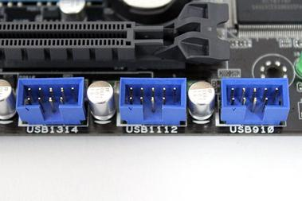The header has nine (9) pins. It permits extra USB port on your the front/drive bay of the machine. There is already a USB incorporated into the motherboard. ports on the integrated I/O peripherals, but more could be added. at the USB-connected front bay header or headers.
SCREW HOLE OR MOUNTING HOLE
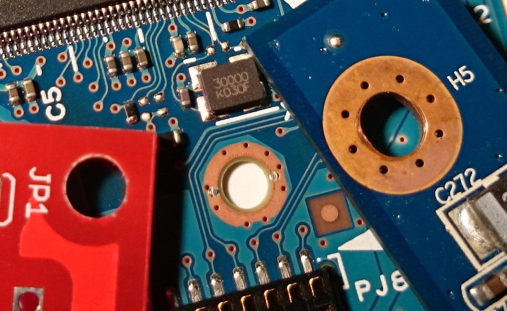The Motherboard Case is located there. Standoff/Standouts is appropriate. To be attached motherboard inside the computer casing or chassis. The majority of motherboards have seven screw hole, however that's not the case at all. There should be a lot of standoffs. It's a On a case-by-case basis, only include noteworthy in the screwhole that matches the chassis screw hole.
SYSTEM PANEL CONNECTOR
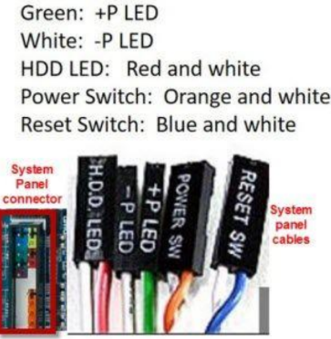Also referred to as the Front Panel header Particularly, the panel and panel header are intended for system panel cable connections. To manipulate or create a power button, and reset button, Power LED, and HDD LED function. Be aware that colored cables for the system panel are wire that is powered or positive, but black or The ground or negative wires are white. cables. The cables, wire colors, and connection could differ from one another. chassis and motherboard brands, thus always Consult the handbook
SATA 1
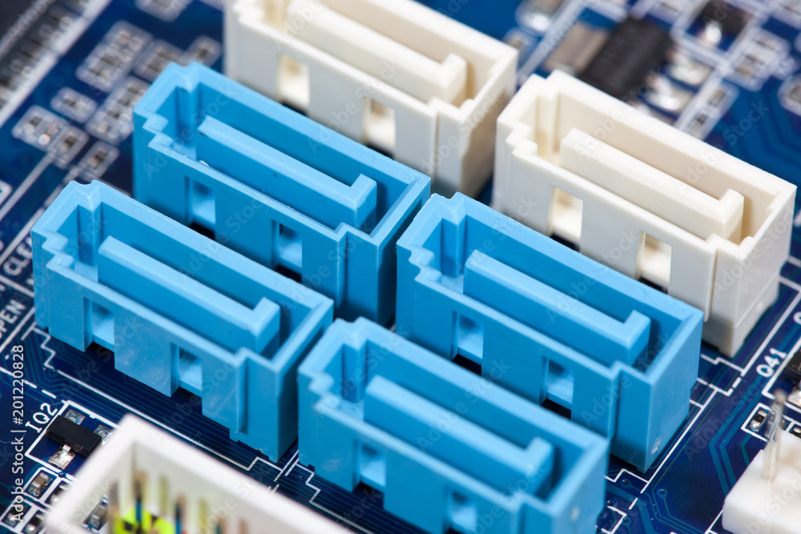This SATA interface is the original model with the 1.5 Gbps speed. Officially, it is known as as 1.5 Gbps SATA. Its bandwidth a maximum throughput of 150 Mbps. This is the replacement for an IDE or P/ATA connector computer bus interface that links mass storage devices including solid-state drives, optical drives, and hard disk drives to host bus adapters. Wikipedia
SATA 2
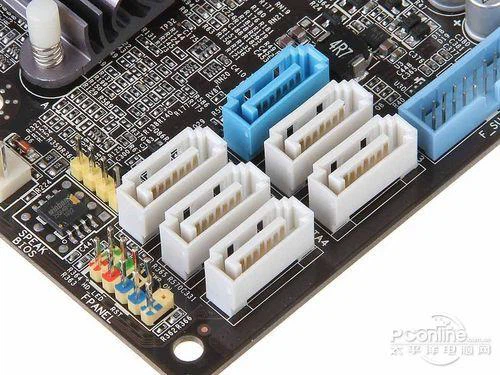SATA 2.0, the second-generation SATA interface, operates at 3.0 Gbps with a maximum bandwidth of 300 MB/s. It is often located on the side of the motherboard and is backward-compatible with SATA 1 ports..
ATA (AT ATTCHMENT)
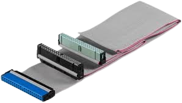>Another name for it is PATA (Parallel ATA). It is was once the IDE's standard interface. compatible hard disks, but has since been swapped out through SATA
MOTHERBOARD CAPACITORS
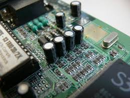Are tiny parts of the motherboard that aids in conditioning power on others parts of the motherboard. A capacitor can additionally hold electronic charge, so it is best to avoid touching one if the The computer has just shut down. To make available the electronic charge of the capacitor, push the the computer's power button when it's Unplug. Bulge capacitors could result in many motherboard issues.
NORTHBRIDGE
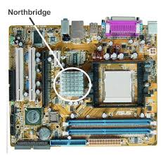Also referred to as PAC or NB, it regulates the flow of exchanges between RAM, PCIe, and processor or Memory stick. The North Bridge is a bridge that controls communication between the motherboard's components and the CPU. The North Bridge chip, which is the only motherboard circuit other than the CPU that typically operates at full processor bus speed (Front side bus), is essentially the motherboard's principal component after the CPU Geeksforgeeks.
SOUTHBRIDGE
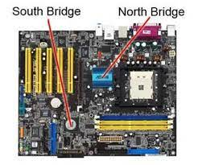Is an IC on the motherboard that accepts take care of every I/O controller, combined hardware and hard drive manager. Combined Sound is one example of a peripheral. card, video card, and USB ports, BIOS, SATA, IDE, Firewire, the Internet, and so forth.
MEMORY SLOT
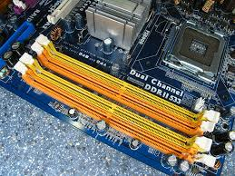Sometimes referred to as a RAM slot or The memory socket is where the Memory sticks, or RAM, are put in. Typical Previously, the motherboard had two memory slots, although they're high final motherboards could have more.
SOCKET NAME
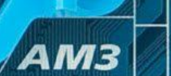Is additional crucial information to Examine the motherboard. This is to Verify that the processor is in line with the motherboard. The picture up top is an example of AMD. AM3 socket. AMD has sockets as well. AM3+, AM2, FM1, socket FM2, The most recent are AM2+ and AM4. Intel LGA 775 and LGA 1156 were formerly LGA 1150, LGA 1151, and LGA 1366 LGA 1155.
CPU SOCKET
It is the location of the CPU, or processor. It fits into the Central Processing Unit. The processor ought should work with The socket on the motherboard name that was previously mentioned. CPU sockets that correspond to the particular CPUs on each server are installed. One socket or more sockets for tasks like parallel or heterogeneous computing may be present, depending on the type of server. Gigabyte
MOTHERBOARD MODEL NAME AND NUMBER
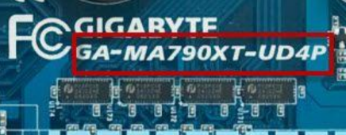If motherboard drivers are missing, search the model number (e.g., UD4P drivers for GA-MA790XT) on the manufacturer's website or a search engine to find the correct drivers. For more guidance, refer to the ASUS YouTube video on verifying the motherboard model name.
JUMPER
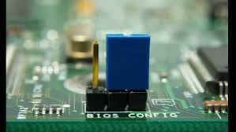Are employed to stop or permit the flow of current. into specific areas of the board. It also made use of to set up hardware parts like the CD ROM, BIOS, and hard disk, Sound card, modem, DVD ROM, and etc. It was used to make adjustments on IDE days. cable, slave drive, and master drive choose by shifting the jumper from two pins apiece.
F AUDIO CONNECTOR
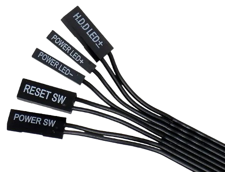Is employed to link front audio. connectors through the casing. This is a continuation of integrated I/O audio connectors
I/O INPUT OUTPUT
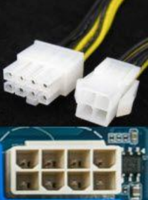An example of these is the Integrated Peripherals. The motherboard's integrated external link. The Mouse is located there. USB cord, keyboard, and monitor, SPDIF, audio jacks, firewire, and Additional external devices must be linked..